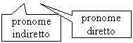
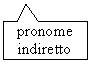
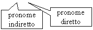

I pronomi combinati
When there is more than one object pronoun in a sentence, the order is:
indirect + direct = combination
Look at the following examples.
(Io) ti do il regalo.

il regalo → I give you the present. |
(Io) te lo do.

il regalo is replaced by the direct object pronoun lo.
I give it to you. |
(Io) ti do i regali.

il regali → I give you the presents. |
(Io) te li do.

I regali is replaced by the direct object pronoun li.
I give them to you. |
(Io) ti do la pizza.
la pizza → I give you the pizza. |
(Io) te la do.
la pizza is replaced by the direct object pronoun la.
I give it to you. |
(Io) ti do le pizze.
le pizze → I give you the pizzas. |
(Io) te le do.
le pizze is replaced by the direct object pronoun le.
I give them to you. |
The indirect object pronoun ti changes to te when it is followed by a direct object pronoun. The indirect object pronouns mi, ci and vi follow the same pattern.
I pronomi indiretti gli and le
When the indirect object pronouns gli and le combine with a direct object pronoun, they both change to glie + direct object pronoun.
 |
Some ambiguity may occur when combining these pronouns. Since object pronouns are generally only used once a context has been established, however it should be easy to interpret what and who they are referring to. |
Look at the following example.
| (Io) do il CD a Simone. |
(Io) gli do il CD.
Simone is replaced by the indirect object pronoun gli.
(Io) gli (to him) + lo (it).
il CD is replaced by the direct object pronoun lo.
(Io) glielo do.
I give it to him. |
| (Io) do il CD a Chiara. |
(Io) le do il CD.
Chiara is replaced by the indirect object pronoun le.
(Io) le (to her) + lo (it).
il CD is replaced by the direct object pronoun lo.
(Io) glielo do.
I give it to her. |
| (Io) do la macchina a Gianni. |
(Io) gli do la macchina.
Gianni is replaced by the indirect object pronoun gli.
(Io) gli (to him) + la (it).
la macchina is replaced by the direct object pronoun la.
(Io) gliela do.
I give it to him. |
| (Io) do la macchina a Daniela. |
(Io) le do la macchina.
Daniela is replaced by the indirect object pronoun le.
(Io) le (to her) + la (it).
la macchina is replaced by the direct object pronoun la.
(Io) gliela do.
I give it to her. |
Il pronome indiretto loro
The indirect pronoun loro does not follow the above pattern. It goes after the verb.
| (Io) do loro lo zaino. |
(Io) lo do loro.
I give it to them. |
| (Io) do loro le arance. |
(Io) le do loro.
I give them to them. |
It is now acceptable to replace the indirect object pronoun loro with gli. In this case the gli will go before the verb.
Where there is a direct object pronoun following the gli, it will combine with it.
| (Io) do loro lo zaino. |
(Io) glielo do.
I give it to them. |
| (Io) do loro le arance. |
(Io) gliele do.
I give them to them. |
I pronomi combinati con il passato prossimo
In the following examples the present perfect tense has been used.
|
The ending of the past participle agrees with the direct object pronoun (gender and number). |
| (Tu) mi hai dato il motorino. |
(Tu) me l’hai dato.
You gave it to me. |
| (Tu) mi hai dato i biglietti. |
(Tu) me li hai dati.
You gave them to me. |
| (Tu) ci hai dato la borsa. |
(Tu) ce l’hai data.
You gave it to us. |
| (Tu) ci hai dato le chitarre. |
(Tu) ce le hai date.
You gave them to us. |